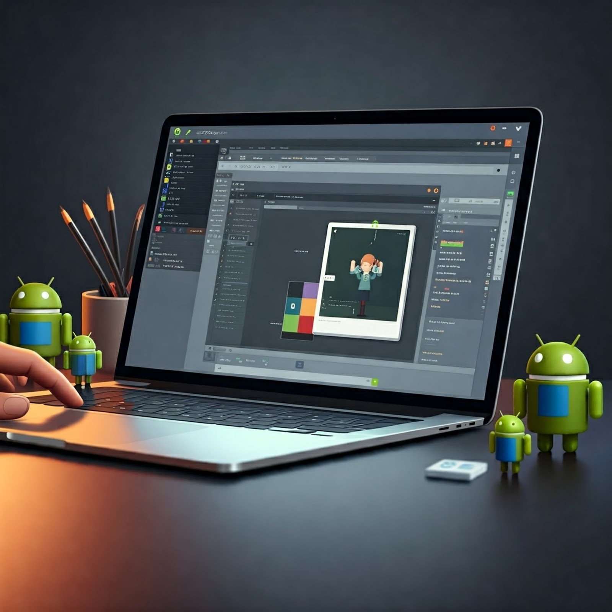
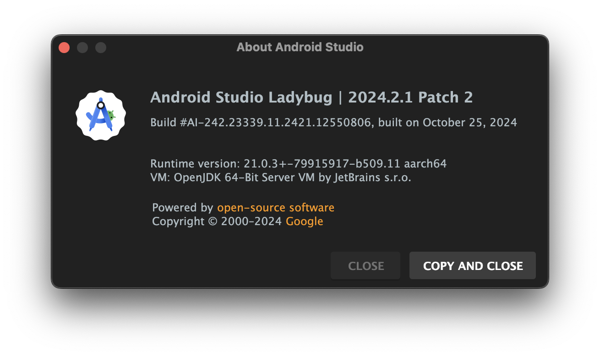
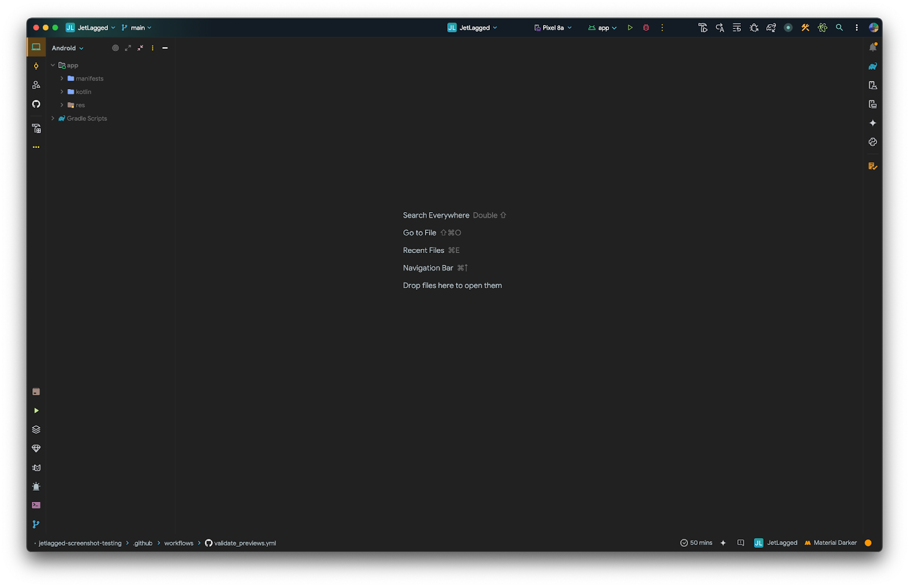

1. Welcome to the world of Screenshot Testing

Last Updated: Mar 24, 2025
How can you ensure visual consistency in your Jetpack Compose app without manual testing?
In modern Android development, ensuring the visual correctness of user interfaces is critical. Screenshot testing allows developers to automatically capture, compare, and verify the appearance of their app's UI. With the introduction of Compose Preview Screenshot Testing in Jetpack Compose, testing UI elements has become even more efficient and accessible. This tool allows you to take advantage of Compose's preview functionality to create pixel-perfect screenshots directly in your development environment.
In this codelab, you'll learn how to set up Compose Preview Screenshot Testing, create and capture screenshots of composables, and incorporate screenshot tests into your development workflow. By the end of this guide, you'll be equipped with the skills to ensure your app's UI remains visually consistent, reducing regressions and enhancing user experience without relying solely on manual testing.
What you'll build
In this codelab, you will:
Set Up the Environment:
Install the required tools for screenshot testing in Android Studio.
Clone the JetLagged sample project from GitHub into your local environment as the starting point.
Explore the JetLagged Project:
Understand the key composable UIs within the JetLagged app that will be targeted for screenshot testing.
Setup Jetpack Compose Screenshot Testing library:
Setup the required dependencies and plugins to enable screenshot testing.
Write Screenshot Tests:
Implement screenshot tests for specific UI elements in the JetLagged project.
Generate reference images:
Understand the Gradle command to generate reference images when UI changes and references need updating.
Run and Analyze Tests:
Execute the screenshot tests and review the generated reports to detect any visual regressions or changes in the UI.
What you'll learn
How to set up Compose Preview Screenshot Testing library
How to write screenshot tests for Compose Preview Screenshot Testing
How to set up reference images and run validations
How to run validation with your CI workflows
What you'll need
Android Studio Ladybug | 2024.2.1 Patch 2 or newer

Knowledge of Kotlin, Android SDK, and Jetpack Compose
Helpful Readings
Before starting this Codelab, here are some articles to get you up to speed with Jetpack Compose Previews:
2. Getting set up
Setup Android Studio
You will be using Android Studio for this CodeLab. Download the latest stable version for your computer and go through the setup wizard to ensure Java, SDK, and Tools are correctly configured.
downloadDownload Android StudioGet the code
Everything you need for this project is hosted on GitHub. To get started, grab the code and open it in Android Studio.
Clone the repository:
git clone https://github.com/kartikarora/codelab-compose-preview-screenshot-testing.git
Open the project in Android Studio and let it sync. Once synced, your window should look like this:

3. Explore the Project
Take some time to explore the project. In particular, have a look at various composables and previews.
Run the app on an emulator or a physical device and understand the various UI elements. Feel free to create new previews or set up data for any screenshot tests you might want to create later.
The app contains 7 days worth of sleep data at app/src/main/kotlin/me/kartikarora/jetlagged/data/FakeSleepData.kt.
If you run into issues with Previews not rendering in Android Studio (in particular with a NoSuchElementException), there's an issue with Compose Preview tooling. This can be fixed by generating 90 days worth of fake data.
In the terminal, run:
kotlinc -script scripts/generateRandomSleepData.main.kts
This script updates FakeSleepData.kt with randomly generated 90 days worth of data.
4. Setup dependencies
Update version catalog
In this project, we are using a Version Catalog to manage dependencies. In the project, you will find the catalog defined in libs.versions.toml inside the gradle directory:
gradle/libs.versions.toml
[versions]
...
screenshot = "0.0.1-alpha07"
[plugins]
...
screenshot = { id = "com.android.compose.screenshot", version.ref = "screenshot" }
Now hit the sync button for Android Studio to fetch the new dependency.
Apply the plugin
Next, tell the app module about this new plugin. Open app/build.gradle.kts and add the following:
app/build.gradle.kts
plugins {
...
alias(libs.plugins.screenshot)
}
android {
...
experimentalProperties["android.experimental.enableScreenshotTest"] = true
}
dependencies {
...
screenshotTestImplementation(libs.androidx.compose.ui.tooling)
}
Enable the experimental flag
As a final step, tell Gradle that you are explicitly enabling this experimental feature in gradle.properties:
gradle.properties
# Enable screenshot tests
android.experimental.enableScreenshotTest=true
Sync the project one more time. Once Android Studio finishes syncing, you're ready for the next step!
5. Setup previews for testing
We will be setting up our previews for screenshot testing, and then create some reference images. These reference images will be the "ground truth"—every validation of UI will use these reference images as a baseline.
To designate the composable previews you want to use for screenshot tests, place the previews in a test class located in the screenshotTest source set (app/src/screenshotTest/kotlin/me/kartikarora/jetlagged/PreviewsForTest.kt):
app/src/screenshotTest/kotlin/me/kartikarora/jetlagged/PreviewsForTest.kt
class PreviewsForTest {
@Composable
@CombinedPreview
fun JetLaggedHomeScreenPreview(@PreviewParameter(JetLaggedHomeScreenPreviewProvider::class) uiState: JetLaggedScreenState) {
JetLaggedHomeScreen(
sleepGraphData = uiState.sleepGraphData,
wellnessData = uiState.wellnessData,
heartRateData = uiState.heartRateData
)
}
@Composable
@CombinedPreview
fun JetLaggedHSleepScreenPreview(@PreviewParameter(JetLaggedHomeScreenPreviewProvider::class) uiState: JetLaggedScreenState) {
JetLaggedSleepScreen(sleepGraphData = uiState.sleepGraphData)
}
@Composable
@CombinedPreview
fun JetLaggedHeaderPreview(@PreviewParameter(HeaderPreviewDataProvider::class) header: String) {
JetLaggedHeader(headerText = header)
}
@Composable
@CombinedPreview
fun JetLaggedHeaderTabsPreview() {
JetLaggedHeaderTabs(onTabSelected = {}, selectedTab = SleepTab.Month)
}
// Heart Rate
@Composable
@CombinedPreview
fun HeartRateCardPreview() {
HeartRateCard()
}
@Composable
@CombinedPreview
fun HeartRateGraphPreview() {
HeartRateGraph(heartRateGraphData)
}
// Sleep
@CombinedPreview
@Composable
fun SleepBarPreview() {
SleepBar(sleepData = sleepData.sleepDayData.first())
}
@CombinedPreview
@Composable
fun SleepGraphCardPreview(
) {
SleepGraphCard(sleepState = sleepData)
}
@CombinedPreview
@Composable
fun SleepGraphCardWithHeaderPreview(
) {
SleepGraphCard(sleepState = sleepData, cardHeading = "JetLagged")
}
// UI
@CombinedPreview
@Composable
fun FadingCirclePreview() {
FadingCircleBackground(bubbleSize = 48.dp, color = Color.Magenta)
}
}
class HeaderPreviewDataProvider : PreviewParameterProvider<String> {
override val values: Sequence<String> = sequenceOf("JetLagged", "Sleep", "Home")
}
Feel free to add more previews and adjust settings until you are happy with the coverage.
6. Generate reference images
Now that the previews are ready, let's generate our reference images. Open the terminal in Android Studio and run the following Gradle task:
macOS / Linux:
./gradlew :app:updateDebugScreenshotTest
Windows:
gradlew :app:updateDebugScreenshotTest
Once the task completes, you can find the reference images in app/src/debug/screenshotTest/reference/.
7. Validate and generate test reports
With reference images in place, run the tests using the validation Gradle task:
macOS / Linux:
./gradlew :app:validateDebugScreenshotTest
Windows:
gradlew :app:validateDebugScreenshotTest
The validation task creates an HTML report at app/build/reports/screenshotTest/preview/debug/index.html.
Try modifying the composable UI and running the validation task again—the test will fail and the test report will display an image diff highlighting the exact visual differences!
8. Update reference images
When your UI legitimately evolves, you will need to update the baseline reference images so subsequent test runs pass against the new design.
To update your references, simply re-run the update task:
macOS / Linux:
./gradlew :app:updateDebugScreenshotTest
Windows:
gradlew :app:updateDebugScreenshotTest
This will write updated reference images to app/src/debug/screenshotTest/reference/.
9. Setup with CI
To automatically validate UI on every push, configure a GitHub Actions workflow.
Create .github/workflows/validate_previews.yml in your repository:
.github/workflows/validate_previews.yml
name: Validate Previews
on:
push:
jobs:
validate:
runs-on: ubuntu-latest
permissions:
checks: write
pull-requests: write
steps:
- name: Checkout
uses: actions/checkout@v4
- uses: gradle/actions/wrapper-validation@v4
- name: Setup JDK
uses: actions/setup-java@v4
with:
distribution: 'zulu'
java-version: 21.0.4
- name: Make Gradle executable
run: chmod +x ./gradlew
- name: Validate UI using screenshot tests
run: ./gradlew app:validateScreenshotTest
- name: Upload test result
uses: actions/upload-artifact@v4
if: always()
with:
name: 'screenshot-test-result'
path: 'app/build/reports/screenshotTest/preview/debug'
- name: Publish Test Results
uses: EnricoMi/publish-unit-test-result-action@v2
if: always()
with:
files: |
app/build/test-results/**/*.xml
What this workflow does:
Checks out the repository
Validates the Gradle wrapper checksum
Sets up JDK 21
Makes the Gradle wrapper executable
Runs the screenshot validation task
Uploads reports to GitHub Artifacts
Publishes test result summaries